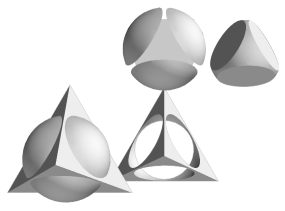

PyGTS

PyGTS is a python package used to construct, manipulate, and perform
computations on 3D triangulated surfaces. It is a hand-crafted and
pythonic binding for the GNU
Triangulated Surface (GTS) Library.
CONTENTS:
- Features
- Resources
- Help wanted
- Wish list
1. Features
Here are some of the main features:
- Geometric primitives Point, Vertex, Segment, Edge, Triangle, Face, and Surface.
- Transformations (translate, scale, rotate).
- Metric operations (area, volume, curvature ...).
- Geometric predicates (orientation, in circle).
- Set operations on surfaces (union, intersection, difference).
- Isosurface computation from 3D data.
- Surface refinement and coarsening (multiresolution models).
The PyGTS binding has complete support for the objects and methods
of GTS's
Geometrical
Object Hierarchy. Some of the more advanced GTS features
(certain
Surface
Operations,
Progressive
and Hierarchical Surfaces,
and Graphs and
Operations on Graphs) are not yet supported.
PyGTS is extensively unit tested, and so should work well out-of-the-box.
GTS itself has been stable for a number of years. The "alpha"
release status of PyGTS reflects the fact that this is a relatively new
package with a developing API.
2. Resources
3. Help Wanted
Contributions are welcome. Help is needed with:
- Install testing
- API testing
- Development of the code (see README.developers)
- The Web site (obviously)
- A tutorial
- Example programs
- Other things that interest you
Please provide your input via the
mailing lists.
4. Wish List
Here are some objectives for future development:
- UI enhancements: math operations, attributes, etc, for geometric primitives.
- Fix intersecting surface problem with CSG.
- Blender support.
Please suggest some addition items via the
mailing lists.
{kind=link}